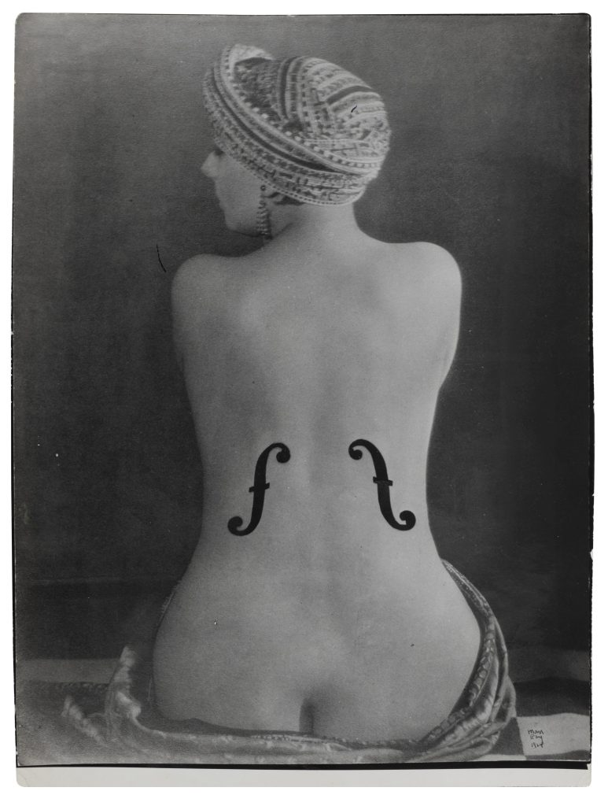
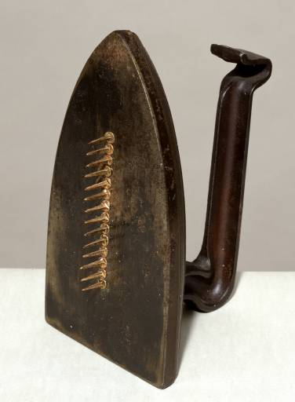
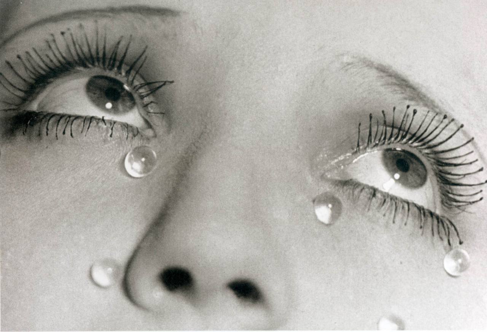
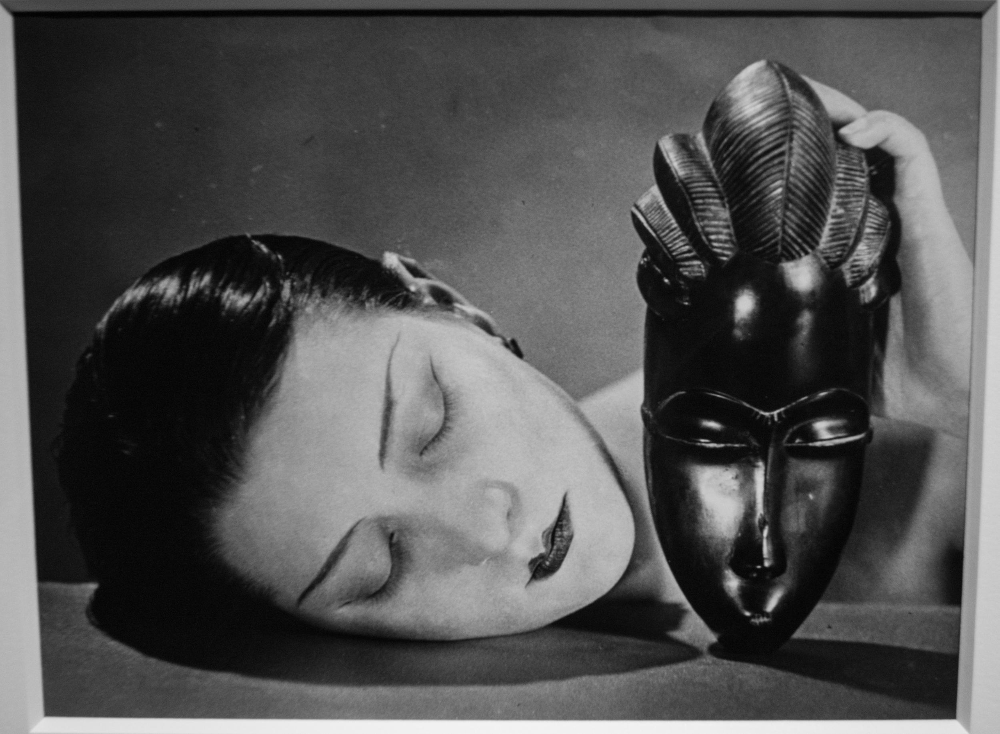
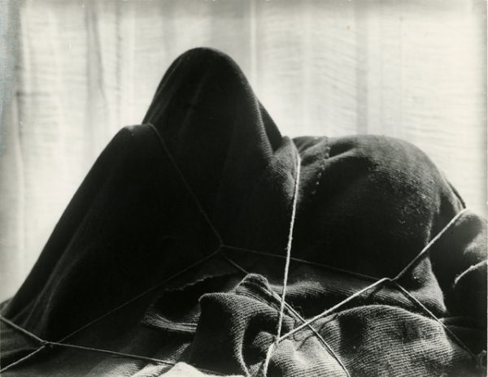
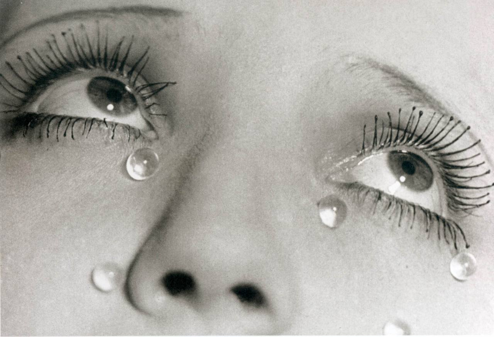
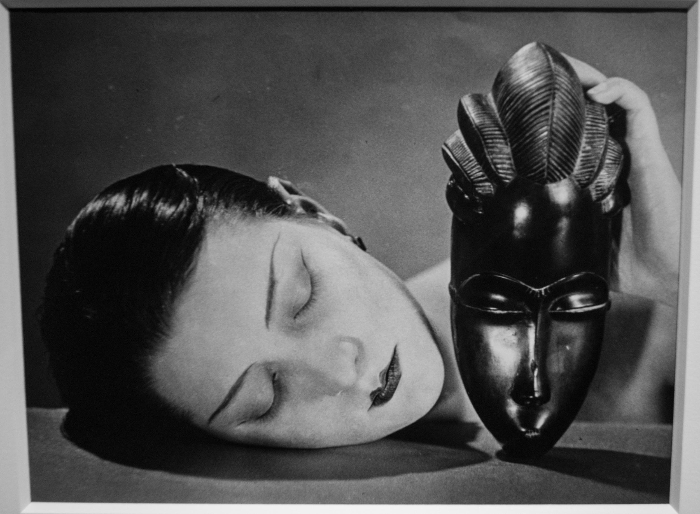
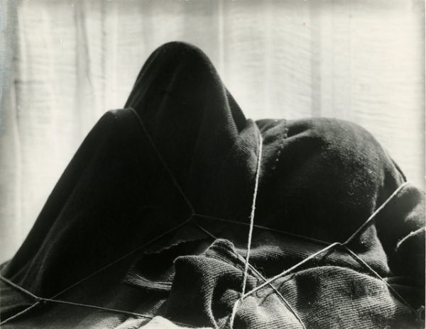

Man Ray
Man Ray, pseudonimo di Emmanuel Rudnitzky, è stato un grande protagonista dell'arte e della fotografia di avanguardia del primo Novecento, esponente di spicco del movimento Surrealista e Dadaista.Emmanuel Rudnitzky nasce a Filadelfia il 27 agosto del 1890 da genitori emigrati dalla Russia durante gli anni Ottanta, Man Ray si trasferisce a Brooklyn (New York). Qui compie gli studi secondari, che lo indirizzano verso il design industriale. Nel 1912 la famiglia Radnitzky cambia il proprio cognome in Ray ed Emmanuel decide di adottare una versione abbreviata del proprio nome, Man ( Man Ray : “uomo raggio”).I suoi studi presso il circolo artistico anarchico Francisco Ferrer, le conversazioni con Alfred Stieglitz alla Galleria 291, dove il giovane si reca ad ammirare i collage di Picasso o gli acquerelli di Cézanne, l’incontro col movimento Dada di Picabia e Duchamp, fanno sì che la sua ricerca converga sullo studio della luce. Man Ray inizia a guadagnarsi da vivere con la fotografia, realizzando ritratti e documentando le opere di altri artisti, allo scopo di arrotondare gli scarsi guadagni provenienti dalla vendita dei suoi dipinti.Nel 1921 Marcel Duchamp ritorna in Francia e invita Man Ray a raggiungerlo. Man Ray, insoddisfatto dall’accoglienza riservata alla sua opera a New York, va a vivere e lavorare nel quartiere di Montparnasse a Parigi, negli anni della grande esplosione creativa della “Ville Lumière“. Qui si innamora della famosa cantante francese Kiki (Alice Prin), spesso chiamata Kiki de Montparnasse, che in seguito diviene la sua modella fotografica preferita. Insieme a Jean Arp, Max Ernst, André Masson, Joan Miró e Pablo Picasso, partecipa alla prima esposizione surrealista, alla galleria Pierre a Parigi nel 1925.Nei venti anni successivi vissuti a Montparnasse, Man Ray rivoluziona l’arte fotografica attraverso una continua sperimentazione tecnica. Negli ultimi anni della sua vita fa spesso ritorno negli Stati Uniti. Morto il 18 novembre 1976, viene seppellito nel cimitero di Montparnasse. Il suo epitaffio recita: “Non curante, ma non indifferente”.
  




